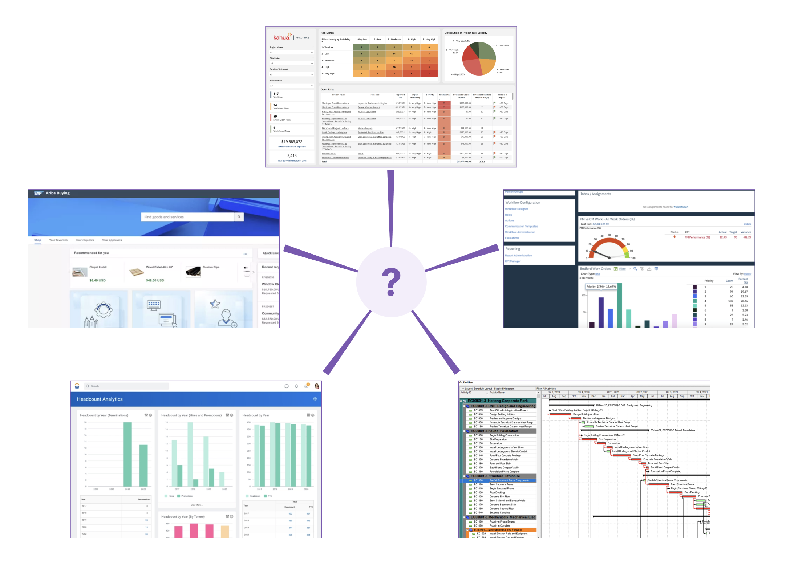
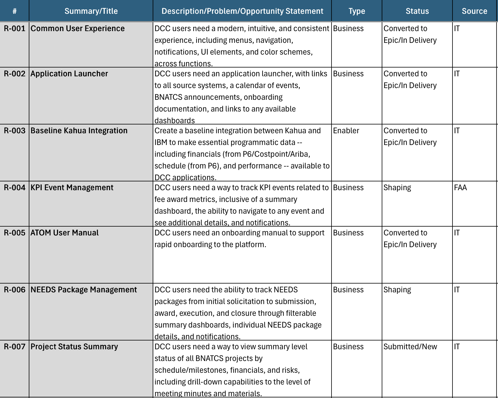
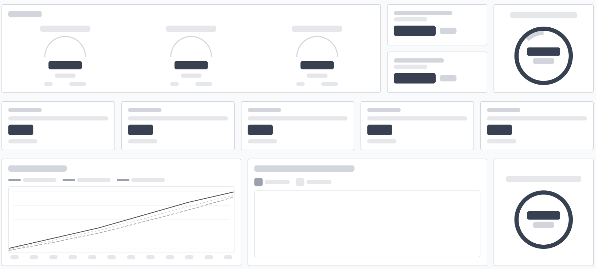
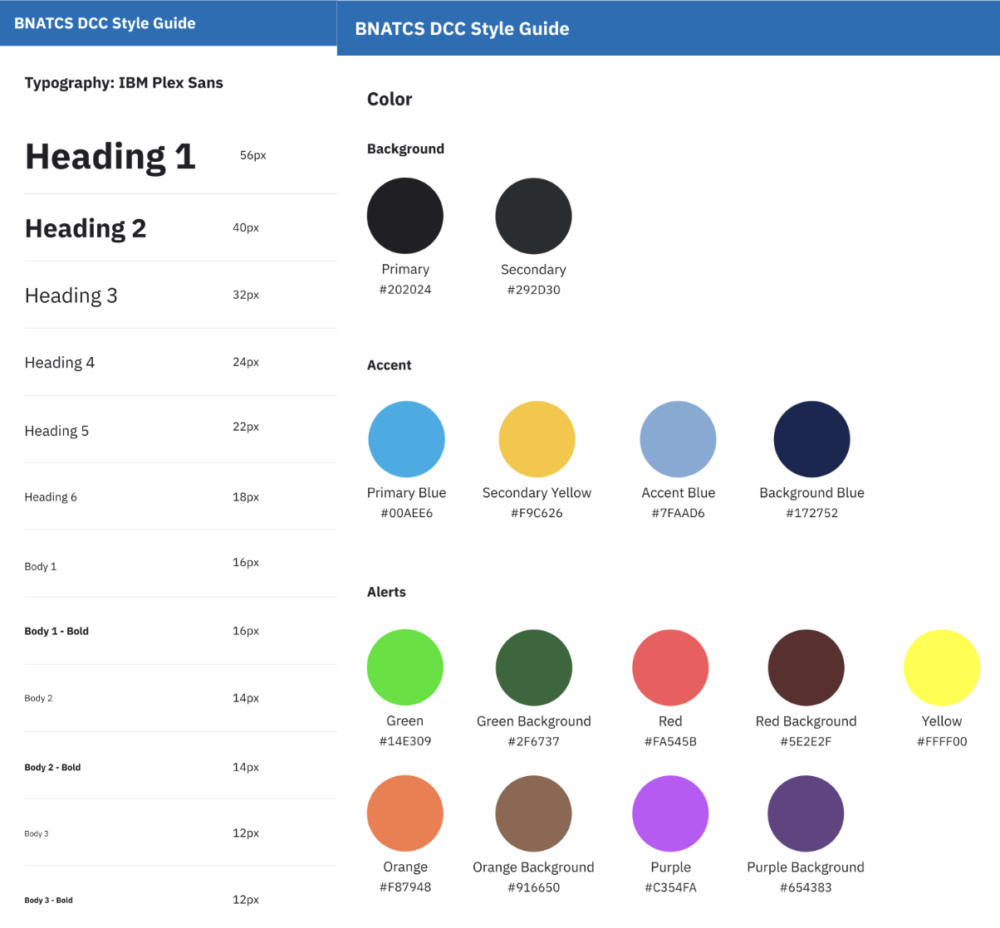
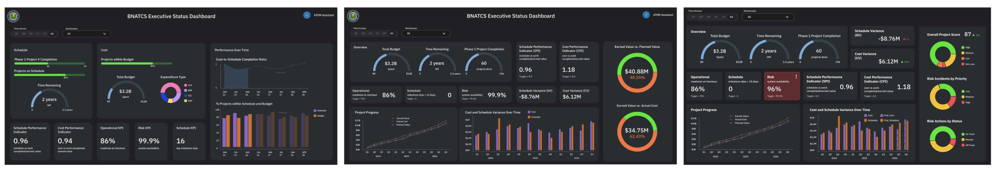

Federal Aviation Administration
The Federal Aviation Administration (FAA) manages hundreds of initiatives that shape the future of the National Airspace System (NAS). I led the design of a decision-support dashboard that integrates project metrics and operational status into a single platform.
problem
Managers tracked schedules and budgets in one environment. Ops monitored system performance in another. Leadership relied on manual reports to understand program health.

user research
key findings
requirements & goals
Since this was a month-long project, the project lead pushed for pretty aggressive milestones for completing parts of the dashboard. Impact vs. effort discussions: Will it be impactful in the proposal? What is the MVP?

ideation
Since this dashboard was meant to be a static proof-of-capability graphic, it had to convince a proposal evaluator as a one-page, view-only, no scroll depiction. I experimented with the F/Z eye sweep pattern: left-to-right along the top, then drop down for a shorter sweep, then vertically down the left edge. I applied this across every view: primary, summary-level metrics top-left, and everything granular moving down and to the right.


stakeholder validation
I was theoretically designing for ATC operators who'd use this daily, but I was actually designing for the executives and evaluators who'd skim this proposal in a few minutes.

results
Upon log in, users can view Announcements, Important Events, Employee Onboarding information, and various Dashboards and Applications to navigate to. These include Executive Status, Project Management, HR System, etc. Notifications/Inbox are located at the top right for easy access to any alerts or system updates. The ATOM Chatbot Assistant is present on all pages for additional AI-personalized guidance.
For the first time, FAA stakeholders can use this unified command center to understand modernization progress, operational impact, and emerging risks.
additional improvements
takeaways
Even though I didn't design something usable immediately, I learned to design for a single glance. Experiences usually rely on first look, and within the first 5 seconds, a user should know what to do.
UX extends beyond visual and interface design. Combining user research, business objectives, and operational needs transforms platforms that government organizations depend on daily. Product strategy helped align user needs, technical feasibility, and organizational goals into a cohesive solution vision.